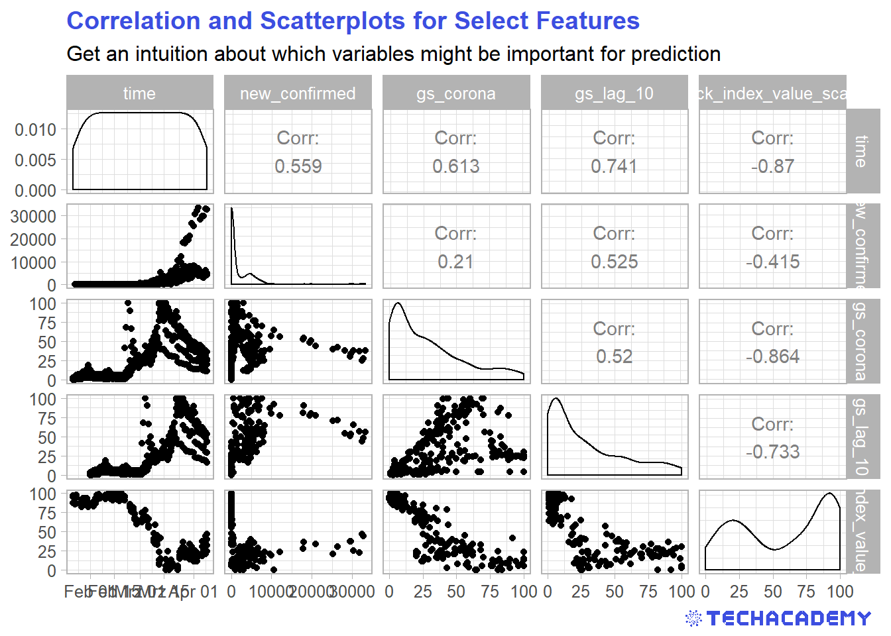

3 Exploratory Data Analysis: Getting to Know the Data Set
Before you can dive into the data, set up your programming environment. This will be the place where the magic happens – all your coding will take place there.
In your workspace on rstudio.cloud we have already uploaded an “assignment” for you (Template Coronavirus). When you create a new project within the workspace “Class of ’20 | TechAcademy | Data Science with R”, your own workspace will open up. We’ve already made some arrangements for you: The data sets that you will be working with throughout the project are already available in your working directory. We also created an RMarkdown file, with which you will be able to create a detailed report of your project. You can convert this file into a PDF document when you have completed the documentation. Open the file “Markdown_Corona.Rmd” and see for yourself!
On JupyterHub you will find the folder “coronavirus”. There, you will find a folder with your name – please create and store your Jupyter notebooks inside there. All the necessary data is stored in the folder “data” which is also located in the “coronavirus” folder.
3.1 Importing, Cleaning and Transforming the Data and Creating Your First Plot
In this section you will get to apply the basics of working with data: You will import, clean and transform the data so that you will then be able to visualize it in the next step.
Visualization is one of the most helpful methods to get a feeling for the relation of the various variables of the data set. As already mentioned, this process is called Exploratory Data Analysis (EDA).
Did you know that Google provides quite extensive public access to the relative number of search queries over time? You can simply type in a keyword and Google returns the public’s relative interest in that topic over time. First have a look at the Google Trends website for yourself. An interesting way to ease into the whole topic of the coronavirus outbreak is to look at a plot of the Google Trends development with respect to the virus. To visualize the number of people searching for “coronavirus” online, first import the Google Trends data set into your workspace and name it accordingly. We have already downloaded the data for you. It is always helpful to give meaningful names to your data sets and variables so that you don’t get confused later on when you have several different data sets and variables in your workspace.
Now it is time to get a quick overview of the data set. What is the structure of the data set, which variables does it contain, what is the type of the variables? What is noticeable?
Before we can get started with the actual visualization, we have to tweak the data set a little so that the different commands will work later on. Sometimes this sounds easier than it is done, but very often the format of the data is not compatible and you have to figure out why and how to manipulate the data accordingly.
To create a time series plot in the next step, it is necessary for the date variable to have the right format. Do you already know how to do that from your DataCamp courses?
After having changed the data to a coherent and meaningful format, it is now time to create our first line plot. Before you actually plot the data, it is helpful to envision what it could look like. Which variable has to be on the x- and y-axis, respectively?
This is what a visualization could look like, but don’t worry, your result does not have to look exactly like this as long as the structure of the plot is similar.

Looking at the line plot, you can see a clear pattern with respect to different dates. Do you know what happened on the dates the spikes in searches occurred? If you have time you can play with the visualization and refine it, add labels and change colors, but that is not too important, so you can first have a look at the following steps and come back to this when you have completed the rest.
3.2 Visualize stock data
The coronavirus had an impact on many areas of our lives and our economy, the stock market being one of them. When visualizing the stock data, the impact becomes evident. Many firms suffered from the outbreak, others profited. Let’s have a look!
As before, you first need to import the stock market dataset and name it accordingly. Once more, it makes sense to get an overview of the data to see what you are working with. Can you already see which variables need to be transformed?
Before visualizing the stock data, try to change the names of the stock symbols, so that people who are not familiar with them know which firm’s stocks are being analyzed.
This time, we will not create a single line plot but several next to each other, which allows for a better comparison of the stock price development of different firms. The following plots are supposed to give you an orientation of what your result could look like:
You can often see vertical lines in the plots to highlight when an event happened that had a severe impact on a variable. Try to add that to the plots. Here is an idea of what it could look like:
